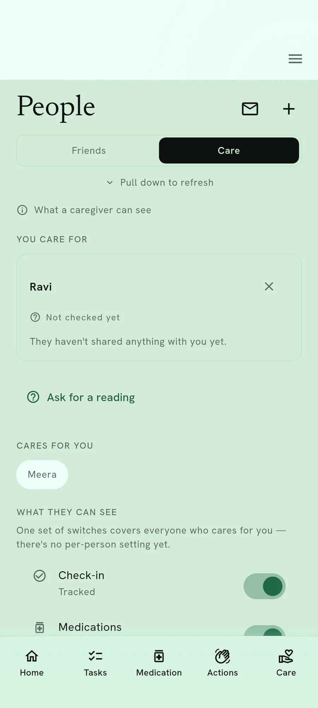
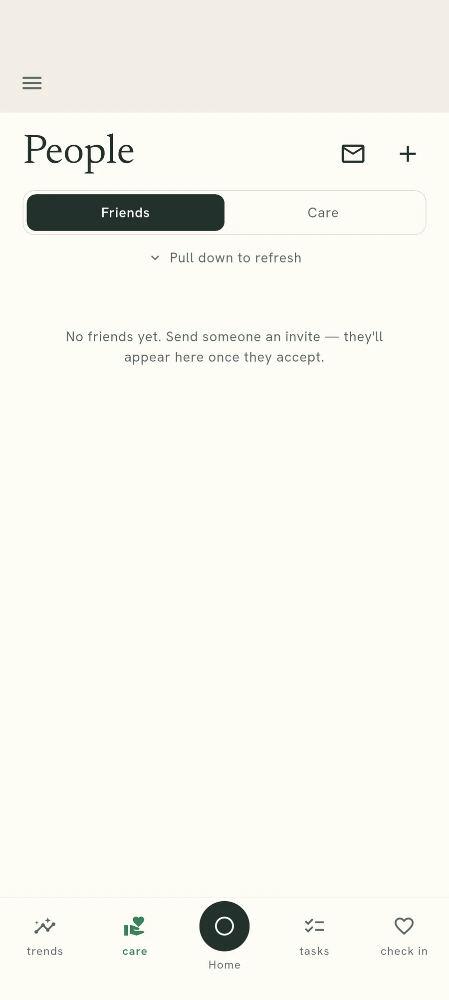
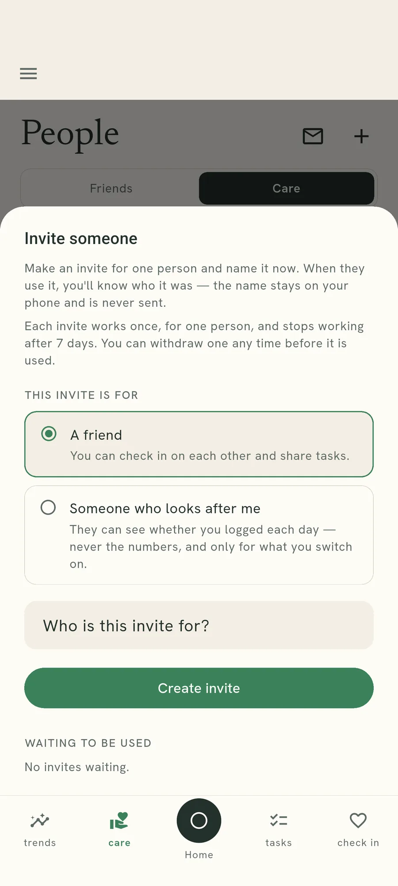
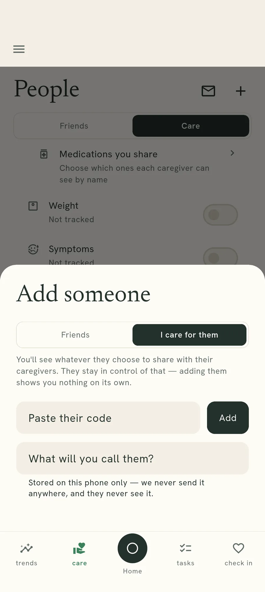
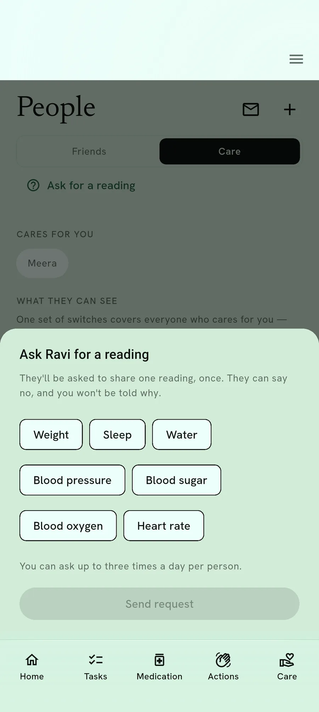

Friends and carers
Someone can help without reading your numbers.
A friend and a carer are two different arrangements. Both start switched off, and the difference is worth knowing before you set either one up.

Two arrangements, one list of people
A friend is company. A carer is someone keeping half an eye on whether the day went the way it should. The same person can be both at once, and the app shows them once rather than twice.
What separates them is not the person. It is what they are able to see.
A friend sees what you send them
Friends share tasks and check-ins. Nothing about your readings reaches a friend, because there is no arrangement between friends that carries one.

A carer sees a tick, by category
For each category you have turned on, a carer sees whether you logged it that day. Blood pressure logged, or not logged. The reading itself stays on your phone unless you send it deliberately, once.

Why a tick and not a number
Because the two questions are different. "Did she take them today" is the one a family member is usually asking, and it can be answered without handing over anything a reading would tell you.
Storing the tick and not the value is a decision about what exists on a server at all, rather than about who is allowed to look at it. A record that was never written cannot be read later, by us or by anyone else.
Sharing starts switched off for every category, and switching one off again deletes the days it already wrote. That is the consent gate: not a setting that hides a record, one that stops it being made.
Setting it up, and taking it back
Invite someone, or paste their code
An invite is the usual route and the easy one. Pasting somebody's long code still works as well, which matters when an invite will not go through.

Promote a friend to someone you care for
One tap on the caring-hands mark beside a friend. You do not add them twice, and the friendship does not end when you do it.

Only the carer can create the link
The person doing the caring sets it up from their own phone. You then choose which categories they see, and until you choose, they see none.
A reading crosses only when you say so
A carer can ask for one. You see the request and decide on that request alone. What crosses is locked to their phone, held briefly, and deleted once collected.

Categories are for everyone, medicines are not
Turning a category on shows it to every carer you have. Medicines are the exception: those are chosen one carer at a time. It is worth knowing the two work differently before you set them up.
Read the rest of it
What the app stores about a shared arrangement is set out claim by claim, with the test that holds each one.